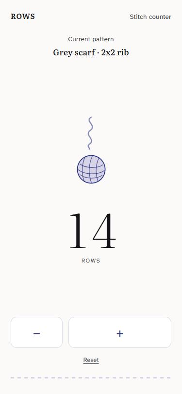
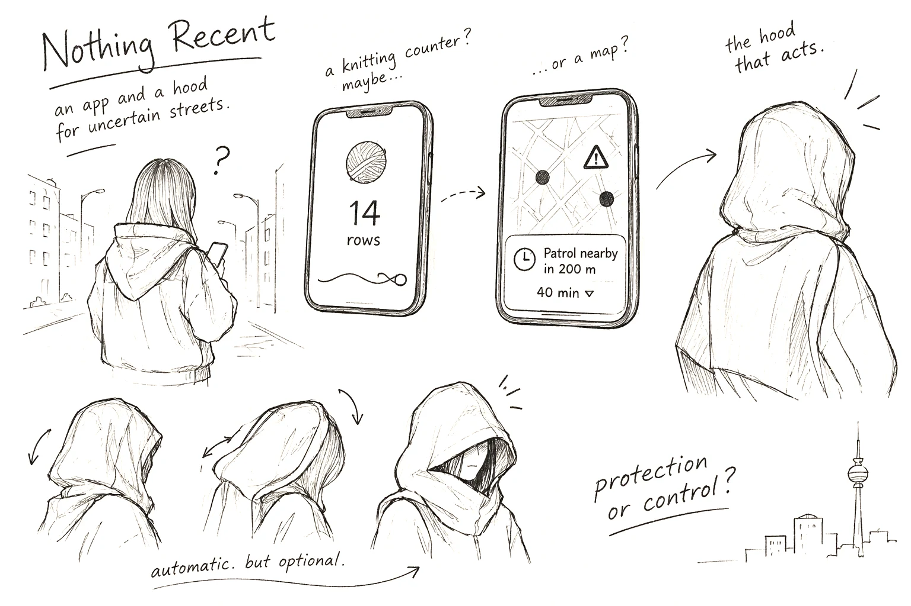
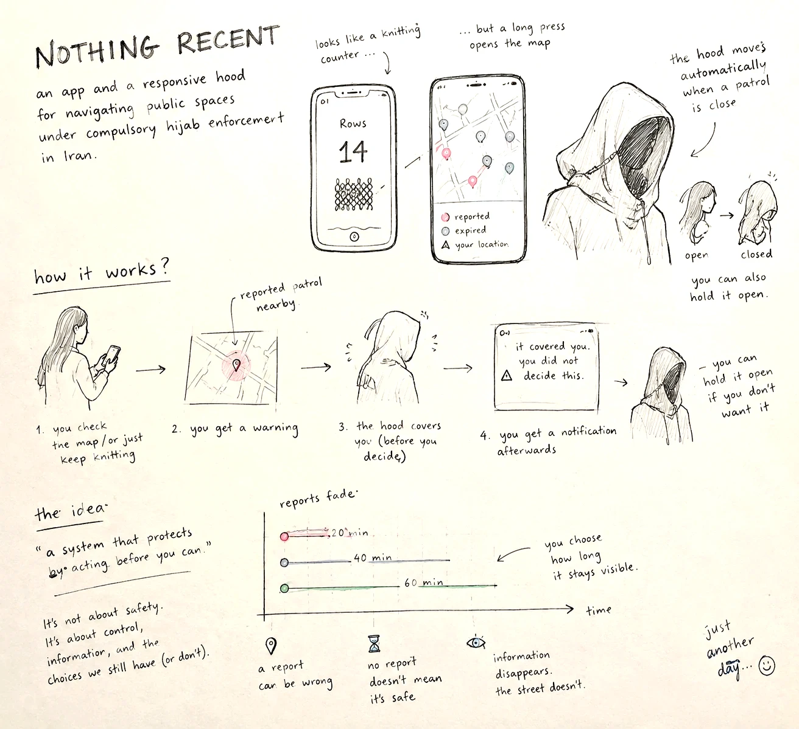

Nothing Recent
Speculative HCI · Research through Design · 2026
An app and a responsive hood exploring how technology might help women navigate public spaces under compulsory hijab enforcement in Iran.
In the street
In Iran, the enforcement of compulsory hijab shapes how women experience and move through public spaces. Morality patrols and other enforcement agencies can appear in different locations and at unpredictable times, so women often rely on shared information to anticipate their presence and to make decisions about where and when to move. But this information is temporary, uncertain, and difficult to keep up to date. Nothing Recent explores how this everyday exchange could be supported through a connected, location-aware system.
Two objects
The project consists of a mobile application and a responsive hood. The application looks like a simple knitting counter, and it works as one, displaying the number of rows — but a long press reveals another layer: a map where users can report the presence of enforcement patrols. Reports gradually expire, remaining visible for 20, 40, or 60 minutes, depending on the user's choice.
When a reported patrol is nearby, the connected hood automatically moves to cover the wearer's head, and she can hold it open even while a warning is active. The hood responds before the wearer has to make a decision: it offers a form of protection, but it also takes control of a decision that should belong to her.



A question of control
A garment that covers a woman to protect her from enforcement also reproduces the very act of control it is supposed to help her navigate. The application raises similar questions: shared reports may offer awareness, but they are not necessarily accurate, information can disappear without meaning that a situation is safe, and reporting can introduce new forms of visibility and risk.
What does it mean to design a technology that protects someone by temporarily taking away their choice? Can a system support women's autonomy while also anticipating and influencing their behaviour?
The small print
Nothing Recent is a speculative design proposal, not a tested safety application. The mobile interface is prototyped using simulated reports and location-based interactions, while the responsive hood is explored as a conceptual wearable, and AI-assisted environmental awareness is considered as a possible extension rather than an implemented detection capability.
The project does not claim to provide real-world protection or to represent the experiences of all women in Iran. As an Iranian designer working in Germany, I approach this subject from my own position and use design to explore the relationship between bodily autonomy, technological protection, and institutional control.

